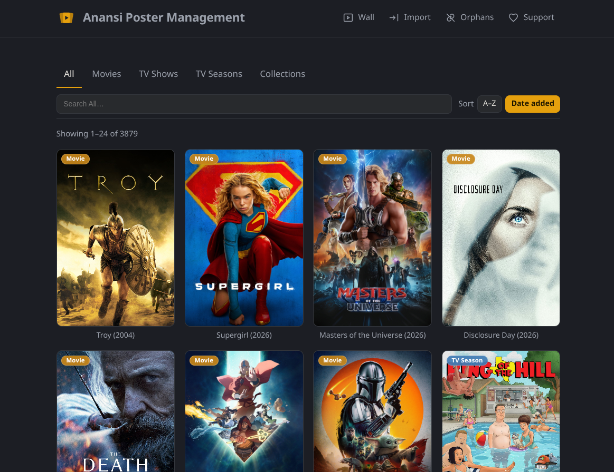
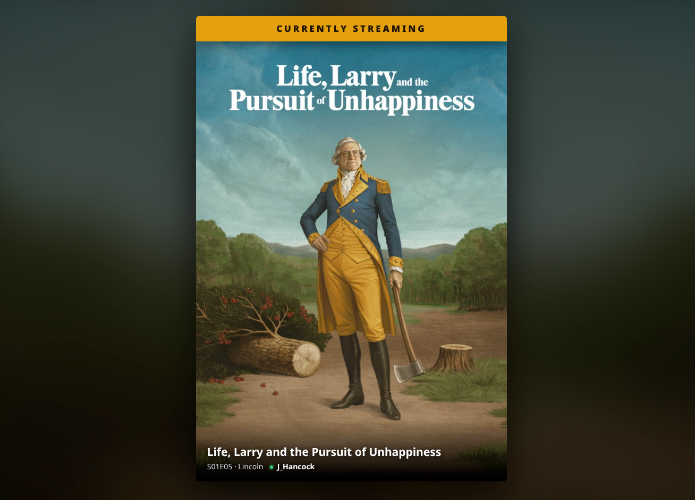

Introducing Marquee
I already built a Plex poster manager. It's called Posteria, it works, and people use it every day. So the reasonable thing to do was leave it alone.
Instead, I rewrote the whole thing from scratch.
Marquee is that rewrite — a self-hosted web app for managing the posters in your Plex library. Movies, TV Shows, Seasons, and Collections. Import them all, fix the ones that never looked right, and send your choice back to Plex locked so it actually sticks. Feature for feature, it's the same app Posteria always was — I didn't rewrite it to add things. I rewrote it to build it right.
Why Rebuild Something That Works?
Posteria grew the way side projects grow: a feature here, a fix there, until the code underneath was harder to change than it should be. Every new idea meant working around the last one. Marquee keeps everything the app does and throws out everything about how it was doing it — a clean start on a foundation I actually trust.
So this time the how comes first. Every capability in Marquee gets written down as a spec before any code exists, using a tool called OpenSpec. For a side project that sounds like needless bureaucracy, but it's the opposite: deciding exactly what a feature should do up front keeps the codebase clean and heads off a whole category of regressions before they ever ship. Posteria taught me what that discipline is worth by not having it.
Sharper Poster Search
There's one place the rewrite shows up on screen, not just under it: Find Posters, the search you reach for when Plex's own artwork isn't cutting it. It runs on a brand-new backend — a poster-search API rebuilt from scratch — that pulls from three providers, TVDB, TMDB, and Fanart.tv, and reconciles their results into the closest, cleanest match for the exact title you're looking at. Same button as before. Much better answers behind it.

Features That Make a Difference
📥 Import from Plex
Pull the current poster for every Movie, TV Show, Season, and Collection you own. A step-by-step picker asks what you want first, then shows only the libraries that can actually provide it — no scrolling past things that don't apply.
🎨 Edit posters in place
Found one that bugs you? Upload your own art, paste an image URL, or search Find Posters, the built-in online poster search. You see every change full screen and confirm it before anything happens.
🔒 Locked in Plex
This is the part that matters. When you set a poster, Marquee uploads it to Plex and locks the artwork — so the next agent refresh won't quietly swap your choice back out. The poster you picked is the poster that stays.
⏱️ Auto-import on a schedule
Let Marquee re-import every 1, 3, 6, 12, or 24 hours. It skips anything that hasn't changed in Plex, so recurring imports stay cheap and easy on your server.
🧹 Orphan detection
Removed some media from Plex? Marquee finds the posters left behind with nothing to point at and lets you clear them out — without ever touching Plex itself.
🗂️ Browse and sort your way
Filter by type, or drop the whole library into one grid with every poster tagged. Sort alphabetically or by date added to Plex, newest first.
📱 Mobile-first and installable
On a phone, the gallery stays front and center — navigation and poster actions tuck into full-size trays so nothing crowds your artwork. Install it as a PWA on your phone or desktop and it behaves like a native app.
The Poster Wall
The Poster Wall isn't new — Posteria had it too — but it's different enough from the rest of the app to be worth its own section.
It's a full-screen, slideshow view of your library that turns into a live now-playing board the moment someone in your house starts watching something. It shows the poster of whatever is streaming, with a Currently Streaming banner, the media details, and which Plex user is watching. More than one stream going at once? It rotates through them automatically.
No sign-in required. Point a spare monitor or an old TV straight at it and walk away. It's the kind of feature that does nothing strictly useful and somehow becomes the best thing in the room.

How It Works
Three steps, and none of them are complicated.
- Connect and import. Point Marquee at your Plex server, choose what to bring in, and pick the libraries. It pulls the current poster for each item and remembers what it belongs to.
- Fix the ones that bug you. Hover a poster — or tap it on mobile — to open its actions. Upload a file, paste a URL, or search Find Posters, then apply.
- Send it to Plex and keep it. Marquee uploads the poster and locks it. Pull fresh art back any time, and use Orphans to tidy up what's gone.
Who Is Marquee For?
- Plex owners who care what their library looks like, not just what's in it
- Anyone tired of a perfect poster getting silently replaced on the next scan
- People with a spare screen that's begging to become a now-playing display
- Self-hosters who want their tools running on their own hardware, full stop
Coming from Posteria?
There's no migration, and you don't need one. Marquee treats Plex as the source of truth, so your posters come from Plex — not from a Posteria export. Make sure Plex has the art you want to keep, retire your Posteria container, set up Marquee, and run an import. That's the whole process.
And to be straight about Posteria: it's still available and it still runs, but I'm not updating it anymore. Its Find Posters also still calls the old search API — the one Marquee replaced — and that older backend has started to degrade. Marquee is where the work goes from here.
Still Alpha, but Coming Along
Marquee is still alpha on paper, but further along than the word usually implies, and it's under active, steady development. There are still a few rough edges, and some things will change as it settles — so keep your own backups, same as you would with anything new pointed at your library. That's about the extent of the fine print.
Feedback is genuinely welcome, though — a lot of what makes a tool like this good comes from people running it in setups I'd never think of.
Get Started
Marquee runs as a single self-hosted container that talks to your Plex server — no accounts, no cloud, nothing leaving your network. Drop in a Docker Compose file, point it at Plex, and open Import from Plex.
Full setup instructions, every configuration option, and release notes live on GitHub. The project site has a tour of everything above if you'd rather see it first.
- Project site: getmarquee.now
- Source & install guide: jeremehancock/Marquee
Technical Highlights
- Self-hosted — runs in Docker with a single Compose file
- Yours alone — no accounts, no telemetry, nothing leaves your network
- Your posters, your folder — everything persists in one directory you control
- Reverse-proxy friendly — sits behind whatever you already run
- Installable PWA — add it to your phone or desktop home screen
- Open source — MIT licensed
Support the Project
Marquee is free, and it's staying that way. If it earns a spot in your setup and you feel like chipping in, you can throw a few dollars at ongoing development — or, let's be honest, at another hard drive for my Plex server that I absolutely need and can definitely justify.
Hard drive fund →
AI Disclosure
This project was created with the help of AI.
Links
- GitHub: jeremehancock/Marquee
- Marquee Website: getmarquee.now